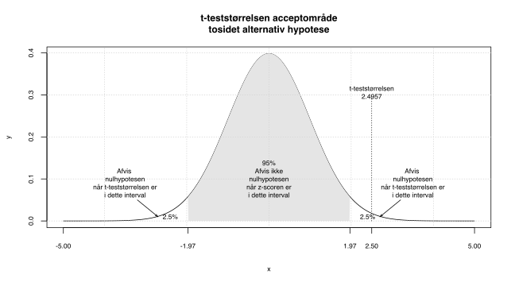
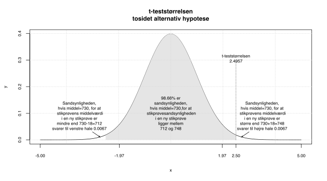
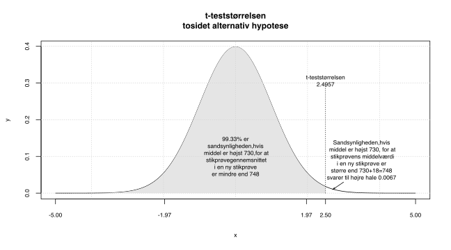
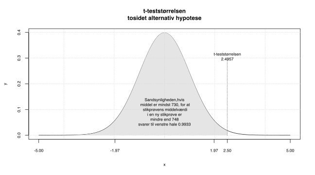
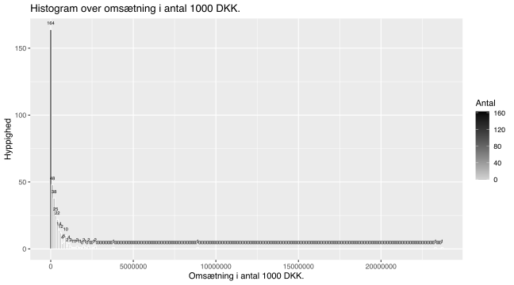

Kapitel 6 Hypotesetests middelværdi
6.1 Hypotesetest tosidet alternativ hypotese
Vi kan ud fra en udtale os om, hvad den sande middelværdi \(\mu\) i er. I eksemplet med mægleren tidligere, var den gennemsnitlige afstand til nærmeste filial 748 meter, 102 meter og stikprøvestørrelsen 200.
Mægleren mener, den sande afstand til nærmeste filial i gennemsnit er 730 meter. Kan dette være korrekt? Hypotesen bliver:
\[H_0:\mu = 730\] \[H_1:\mu \neq 730\]
Påstanden i \(H_0\) er vores udgangspunkt, noget vi på forhånd mener er korrekt. Der skal en del til at vi forkaster og dermed konkluderer at udsagnet i hypotesen \(H_1\) eller \(H_a\) er korrekt. Alternativ hypotesen \(H_1\) er altid det komplementære udsagn til , dvs. når er \(=\) bliver hypotesen \(\neq\).
6.1.0.1 Signifikansniveau
\(\alpha\) angiver sandsynligheden for at forkaste en sand nulhypotese, ofte sættes dette til 5%. Det betyder at i 1 ud af 20 tilfælde, vil vi komme til at forkaste , til trods for at denne var sand. Vi udtager stikprøver simpelt tilfældigt fra , enkelte af disse vil give et forkert billede af virkeligheden. Ønsker man yderligere sikkerhed, for ikke at forkaste en sand nulhypotese, kan man sætte til 1%, så vil man kun i 1 ud af 100 tilfælde forkaste en korrekt nulhypotese.
I medicinalindustrien bruger man typisk 1% signifikansniveu for at sikre at et produkt har en effekt. Hypoteserne ville da være. \[H_0\ produktet\ har\ ingen\ effekt\] \[H_1\ produktet\ har\ effekt\] Man ville således kun i 1 ud af 100 tilfælde fejlagtigt konkludere at et produkt har effekt. \(\alpha\), betegner sandsynligheden for at begå en type 1 fejl. En type 1 fejl, er alså sandsynligheden for at forkaste en nulhypotese der er sand.
Konfidensniveauet angiver sandsynligheden for at ikke forkaste en sand nulhypotese, summen af og er således 100%. 5% svarer til 95% , 1% svarer til 99% . De gængse signifikansniveauer er 1%, 5% og 10%. Er intet angivet, tester vi på 5% signifikansniveu, man beslutter sig inden testet for hvilket man sætter.
6.1.0.2 Teststørrelse
Vi kalder hypoteseværdien \(\mu_0=730\), vores bliver:
\[\frac{\hat{\mu}-\mu_0}{SEM}=\frac{748-730}{\frac{\hat{\sigma}}{\sqrt{n}}}=\frac{18}{\frac{102}{\sqrt{200}}}=\frac{18}{7.2125}=2.4957\]
Hvor vi fra , har gennemsnittet \(\hat{\mu}\) 748 meter, i \(\hat{\sigma}\) 102 meter og stikprøvestørrelsen 200. Teststørrelser er et centralt begreb i hypotesetests, tælleren 748-730, er et mål for hvor stor forskellen er mellem det vi har observeret i 748, og den værdi vi antager under 730. Der gælder for alle typer af tests at store teststørrelser er kritiske for . Store teststørelser betyder vi ikke tror på . I dette tilfælde er , at afstanden til nærmeste filial er 730 meter. Hvornår er en så stor? Det afhænger af testtypen og stikprøvestørrelsen. Her er der tale om et (da hypotesen er \(\neq\)) t-test, det betyder at numerisk store teststørrelser er kritiske. Havde vi fx observeret afstanden til nærmeste filial var 700 meter, var tælleren 700-730 blevet negativ, da nævneren altid er positiv ville blive negativ. Var afstanden kun 700 meter i , ville vi ikke tro på at afstanden i er 730 meter. Når vi tester er meget negative eller positive teststørrelser kritiske for , dvs. når numerisk bliver stor, tror vi ikke på . Da vi ser på en t-test afhænger fraktilerne af antallet af og , når vi har en stor på 5% , vil værdier mindre end -1.96 eller større end 1.96 være kritiske for . Her er stikprøvestørrelsen 200, dvs. vi benytter med 199 , hvilket gør at de kritiske værdier bliver -1.97 og 1.97. I dividerer vi med SEM, dette er for at skalere korrekt, så den altid er i en skala, der svarer til . Havde vi fx målt afstanden til nærmeste filial i centimeter, ville tælleren blive 74800-73000=1800, vi korrigerer for skala ved at dividere med , skalerer vi så bliver den samme uanset om vi måler i meter eller centimeter.
6.1.0.3 Signifikanssandsynlighed p-værdi
Signifikanssandsynligheden også kaldet , angiver sandsynligheden for at få en mere ekstrem , hvis vi udtager en ny tilsvarende , når er sand. I mægler eksemplet er lille 0.0134, der kun 1.34% chance for at få en der numerisk er større end 2.4957, hvis vi udtog en ny på 200, hvis er sand. Da 1.34% er mindre end 5%, tror vi ikke på om at der gennemsnitligt er 730 meter til nærmeste filial.Vi beregner ved arealet af halen, der skæres af ved eller teststørrelsen numerisk. Arealet ved højre hale, der skæres af 2.4957 er 0.0067, arealet ved venstre hale, der skæres af -2.4957 er ligeledes 0.0067. Når vi tester 2-sidet lægger vi begge halearealer sammen og får 0.0067+0.0067=0.0134, hvilket er .
Nedenstående figurer viser på 0.0134. Vi forkaster altså på 5% .
Den sande afstand til nærmeste filial, er altså forskellig fra 730 meter. Afstanden er større end 730 meter kan vi af konstatere da 0.0067 er mindre end .


Hvis vi ser på teststørrelser i stedet for afstanden i meter, har vi beregnet denne til 2.4957 svarende til de 748 meter, da er forskellig fra, skal vi se på både venstre og højre hale. Vi skal beregne sandsynligheden ( ) for at få en mere ekstrem , det betyder her en mindre end -2.4957 og større end 2.4957, når om at afstanden er 730 meter er sand. At er mindre end -2.4957, svarer oversat til meter at afstanden er mindre end 712 meter, sandsynligheden for en numerisk mere ekstrem bliver arealet af begge haler 0.0067+0.0067=0.0134.
Vi kan benytte fanen 1
beregnede data i venstre side. Her skal vi benytte testen med to-sidet
.

Vi siger ovenstående konklusion er niveaufølsom, vi ville ikke have forkastet på 1% , da 1% er mindre end på 1.34%. At konklusionen er niveaufølsom, betyder altså at forskellige signifikansniveaer giver forskellige konklusioner.
Hvis vi kender populationens standardafvigelse \(\sigma\), eller vi har store stikprøver, kan vi benytte , til beregning af signifikanssandsynligheder. Software benytter ofte konsekvent , der approximerer , når antallet af vokser. Jo større er jo mindre forskel vil der være mellem de to metoder. Vi kan for små stikprøver benytte , hvis stammer fra en normalfordelt population. I Freestat benyttes kun da vi forudsætter at populationsvariansen er ukendt.
6.2 Tosidet alternativ hypotese og konfidensintervallet.
Når vi tester med , kan vi bruge svarende til til at afgøre om en nulhypotese forkastes. Ligger \(\hat\mu\) indenfor konfidensintervallets nedre og øvre grænse, kan vi ikke forkaste , ligger det udenfor forkaster vi . Denne metode er dog ikke så præcis som testet, hvor vi finder størrelsen af . Ud fra størrelsen af , kan vi afgøre hvor sikker hvor konklusion er.
6.3 Ensidet alternativ hypotese
Ovenfor undersøgte vi om den sande afstand til nærmeste filial i gennemsnit er 730 meter mod hypotesen den sande afstand til nærmeste filial i gennemsnit er forskellig fra 730 meter. Vi kunne fx. være interesseret i:
- Afstanden til nærmeste filial er mindst 730 meter mod
hypotesen at afstanden til nærmeste filial er mindre end 730 meter.
- Afstanden til nærmeste filial er højst 730 meter mod hypotesen at afstanden til nærmeste filial er større end 730 meter.
I formuleringen af spørgsmålet der stilles ligger nøglen til hvilken type test vi bruger, nedenfor er et skema over de ord man oplever i en formuleringen af et spørgsmål, disse skal benyttes til at afgøre om det er den ene eller anden vi skal benytte. Bemærk når man opstiller en konkret vil \(\mu_0\) blive skiftet ud med den mulige middelværdi i man ønsker at teste:
| Ord | Operator | Hypotese | Passer med |
|---|---|---|---|
| Er, kan være, | \(=\) | \(H_0:\mu=\mu_0\) | \(H_1:\mu\neq\mu_0\) |
| Er ikke, er forskellig fra | \(\neq\) | \(H_1:\mu\neq\mu_0\) | \(H_0:\mu=\mu_0\) |
| Højst | \(\leq\) | \(H_0:\mu\leq\mu_0\) | \(H_1:\mu>\mu_0\) |
| Større end | \(>\) | \(H_1:\mu>\mu_0\) | \(H_0:\mu\leq\mu_0\) |
| Mindst | \(\geq\) | \(H_0:\mu\geq\mu_0\) | \(H_1:\mu<\mu_0\) |
| Mindre end | \(<\) | \(H_1:\mu<\mu_0\) | \(H_0:\mu\geq\mu_0\) |
6.3.1 Ensidet alternativ hypotese opad
Vi kan eksempelvis spørge på følgende måder og komme til samme konklusion:
- Afstanden til nærmeste filial er højst 730 meter
- Afstanden til nærmeste filial er større end 730 meter I 1. får vi givet da lighedstegnet ALTID skal i , følger som det komplementære udsagn. I 2. får vi givet hypotesen da udsagnet ikke indeholder lig med, følger som det komplementære udsagn.
\[H_0:\mu \leq 730\] \[H_1:\mu > 730\]
Hvilket betyder vi skal benytte den 2. af de 3 testmuligheder i Freestat output, dvs. bliver 0.67%, vi forkaster altså . Vi konkluderer derfor at \(\mu > 730\). Den gennemsnitlige afstand til nærmeste filial i er altså større end 730 meter. er illustreret i figuren nedenfor, som den hvide højre hale.
Hvis vi her ser på teststørrelser i stedet for afstanden i meter, har vi beregnet denne til 2.4957 svarende til de 748 meter, da er større end, skal vi se på højre hale. Vi skal beregne sandsynligheden ( ) for at få en mere ekstrem , det betyder her en større end 2.4957, når om at afstanden er 730 meter er sand. At er større end 2.4957, svarer oversat til meter, til at afstanden er større end end 748 meter, sandsynligheden for en mere ekstrem bliver arealet højre hale 0.0067 altså .

6.3.2 Ensidet alternativ hypotese nedad
Vi viser her testet for nedad. Der er ingen grund til at teste her, vi ved der skal meget til at forkaste , og vi har et stikprøvegennemsnit, der er større end 730. Vi vil derfor helt sikkert finde, at om at afstanden til nærmeste filial er mindst 730 meter, ikke kan forkastes. Vi viser alligevel eksemplet med samme værdier, for at man kan se hvorledes sammenhængen er mellem de 3 typer af tests.
- Afstanden til nærmeste filial er mindst 730 meter
- Afstanden til nærmeste filial er mindre end 730 meter I 1 får vi givet , da lighedstegnet ALTID skal i , følger som det komplementære udsagn. I 2 får vi givet , da udsagnet ikke indeholder lig med, følger som det komplementære udsagn.
\[H_0:\mu \geq 730\] \[H_1:\mu < 730\]
Hvilket betyder vi skal benytte den 3. af de 3 testmuligheder i Freestat output, dvs. bliver 99.33%, vi forkaster altså IKKE . Vi konkluderer derfor at \(\mu \geq 730\). Den gennemsnitlige afstand til nærmeste filial i er altså mindst 730 meter. er illustreret i figuren nedenfor, som den store grå venstre hale.
Hvis vi ser på har vi beregnet denne til 2.4957, da er mindre end, skal vi se på venstre hale. Vi skal beregne sandsynligheden ( ) for at få en mere ekstrem , det betyder her en mindre end 2.4957, når om at afstanden er mindst 730 meter er sand. At er mindre end 2.4957, svarer oversat til meter at afstanden er mindre end 748 meter, sandsynligheden for dette er meget høj nemlig 99.33%. Dette svarer til den grå venstre hale, vi er altså meget langt fra 5% og forkaster ikke .

6.3.3 Eksempel
6.3.3.1 Statistik karakterer
I datasættet Statkarakterer  findes 54 statistik 2015 finansøkonom karakterer. Man kan med rette diskutere om karakterer for specifikke klasser/undervisere/lokationer etc. er repræsentative for
.
Her antager vi at
er respræsentativ. Det er ligeledes tvivlsomt om vi kan behandle karakterer som en
variabel, der er tale om en
ordinal variabel. I uddannelsesmæssige sammenhænge behandles karakterer som en
variabel, der beregnes gennemsnit og standardafvigelser, derfor forudsætter vi her variablen er
.
findes 54 statistik 2015 finansøkonom karakterer. Man kan med rette diskutere om karakterer for specifikke klasser/undervisere/lokationer etc. er repræsentative for
.
Her antager vi at
er respræsentativ. Det er ligeledes tvivlsomt om vi kan behandle karakterer som en
variabel, der er tale om en
ordinal variabel. I uddannelsesmæssige sammenhænge behandles karakterer som en
variabel, der beregnes gennemsnit og standardafvigelser, derfor forudsætter vi her variablen er
.
Vi finder parameterestimatet ved stikprøvegennemsnittet som \(\hat{\mu}=4.65\)
Vi ønsker nu at undersøge om gennemsnittet i , kan antages at ligge præcis mellem 4 og 7 dvs. 5.5. Det betyder vores \(\mu_0=5.5\). Hypoteserne bliver:
\[H_0: \mu = 5.5\] \[H_1: \mu \neq 5.5\]
Standard fejlen for middelværdien er 0.63, . Det betyder bliver -1.34. Vi kan nu bestemme , arealet af de 2 haler i med 53 . bliver 0.1844, da er større end 5%, kan vi altså ikke forkaste .
Vi konkluderer altså gennemsnittet i , kan antages at være 5.5.
6.4 Standardafvigelse test
6.4.0.1 FPC endelig populations korrektion og z-test
6.4.0.2 Type 1 og type 2 fejl

Hvis man forkaster en sand nulhypotese, kaldes det en type 1 fejl, det betyder nulhyposen er sand, men vi forkaster fejlagtigt , dette kaldes en falsk positiv. Man kan tænke på som den generelle opfattelse, er den den nye tanke/revolutionen der går imod den gængse opfattelse. Vi kan forestille os følgende eksempler på nulhypoteser:
- En mand anklaget for mord er uskyldig.
- Du har ikke kræft.
- Der findes ikke liv på Mars.
- Omsætningen er ikke steget.
- Udgifterne er uændrede.
- Jorden er flad (i meget gamle dage).
- Jorden er rund (nu).
- Du er ikke gravid.
- Medicinen har ingen effekt
Vi kan bestemme sandsynligheden for at forkaste en sand nulhypotese/en type 1 fejl/en falsk positiv, det er vores \(\alpha\), tilsvarende er sandsynligheden for ikke at forkaste en sand nulhypotese \(1-\alpha\). Dvs. når vi tester på 5% signifikansniveu vil vi 1 ud af 20 gange (5%) begå en type 1 fejl. I medicinalindustrien skal man være helt sikker på et nyt produkt har en effekt, derfor tester man ofte på 1% signifikansnivaeu (100%-1% = 99% ). Dette betyder at man kun 1 ud af 100 gange begår en type 1 fejl og konkluderer et medicinalprodukt har en effekt selv om det i virkeligheden ingen effekt har. Type 1 fejl er ofte noget, vi meget gerne vil undgå. Vi kan for statistiske hypoteser styre hvor ofte der begås fejl vha. , men tankegangen gælder også når vi ikke statistisk kan måle . Hvis er en mand anklaget for mord er uskyldig, svarer en type 1 fejl til at begå justitsmord, derfor skal beviserne i straffesager være stærke for at sikre domsfældelse. Hvis omsætningen ikke er steget, men vi konkluderer den er steget er der tale om en type 1 fejl.

En type 2 fejl kaldes en falsk negativ, sandsynligheden for at begå en type 2 fejl kan ikke beregnes direkte. En skyldig mand der frikendes, er en type 2 fejl. Hvis omsætningen er steget, men vi konkluderer den ikke er steget, er der ligeledes tale om en type 2 fejl.
| \(H_0\ Sand\) | \(H_0\ Falsk\) | |
|---|---|---|
| \(\ Forkast\ ikke\ H_0\) | Korrekt beslutning | Type 2 fejl, falsk negativ |
| \(\ Forkast\ H_0\) | Type 1 fejl falsk positiv | Korrekt beslutning |
6.5 Spørgsmål hypotesetests
Spørgsmål hypotesetest dagsafkast
Vi har en indsamlet data for dagsafkastet i procent for en aktie på 80 vilkårlige handelsdage. Aktien har et gennemsnitligt dagsafkast i procent på 0.05% og en standardafvigelse på 0.6%
1. Test på 5% om det gennemsnitlige dagsafkast \(\mu\) i antages at være 0%?
2. Test på 5% om \(\sigma\) i antages at være mindre end 0.7% dvs. 0.007?
Svar hypotesetest dagsafkast
Vi har ikke rådata for de 80 handelsdage, derfor må vi i stedet benytte beregnede data i Freestat fanen Middelværdi standardafvigelse.
1. Hypoteserne bliver:
\[H_0:\mu=0\]
\[H_1:\mu\neq0\]

Da p værdien/ 45.83% er større end 5% , kan vi ikke forkaste . Det betyder det gennemsnitlige dagsafkast kan antages at være 0% for denne aktie.
2. Hypoteserne bliver:
\[H_0:\sigma\geq0.007\]
\[H_1:\sigma<0.007\]

Da / 3.68% er mindre end 5% , afviser vi . Det betyder \(\sigma\) for aktien er mindre end 0.7%
Spørgsmål hypotesetest uddannelse
Vi kan ligeledes se på data for bankansatte betragt variablen gennemsnitligt antal års uddannelse EDUCATION. Datasættet kan hentes her bankdata
1. Er det gennemsnitlige antal års uddannelse i
13 år?
2. Er
i
mindre end 3 år?
Svar hypotesetest uddannelse
1. Hypoteserne bliver:
\[H_0:\mu=13\]
\[H_1:\mu\neq13\]

Da p værdien/ 0.02% er mindre end 5% , afviser vi . Det gennemsnitlige antal års uddannelse i altså ikke 13 år.
2. Hypoteserne bliver:
\[H_0:\sigma\geq3\]
\[H_1:\sigma<3\]

Da p værdien/ 12.17% er mindre end 5% , kan vi ikke afvise , er altså mindst 3 i .
6.6 Spørgsmål hypotesetests og normalfordeling
Spørgsmål Standard normalfordelingen
- Hvad er parametrene for
og hvad kalder man også denne fordeling?
- Hvad er nedre og øvre grænse for 95%
for standard normalfordelingen?
- Hvad er nedre og øvre grænse for 90%
for standard normalfordelingen?
- Hvad er nedre og øvre grænse for 99%
for standard normalfordelingen?
- Hvad er 0.025
for standard normalfordelingen (hint brug Excelfunktionen NORM.INV, angiv fraktil, middelværdi og standardafvigelse som argumenter)?
- Hvad er 0.975
for standard normalfordelingen?
- Hvorfor er de 2
numerisk identiske?
- Hvad er 0.05
for standard normalfordelingen?
- Hvad er 0.95
for standard normalfordelingen?
- Hvad er 0.005
for standard normalfordelingen?
- Hvad er 0.995
for standard normalfordelingen?
Svar Standard normalfordelingen
- Parametrene for
\(\mu=0\) og \(\sigma=1\),
kaldes også standard normalfordelingen
- Nedre og øvre grænse for 95%
for standard normalfordelingen er -1.96 og 1.96
- Nedre og øvre grænse for 90%
for standard normalfordelingen er -1.64 og 1.64
- Nedre og øvre grænse for 99%
for standard normalfordelingen er -2.58 og 2.58
- 0.025
for standard normalfordelingen, findes i excel som =NORM.INV(0.025;0;1) resultatet bliver -1.96, hvilket netop er nedre grænse i 95%
for standard normalfordelingen.
- 0.975
for standard normalfordelingen er 1.96
- De 2
numerisk identiske, da normalfordelinger er symmetriske og standard normalfordelingen har middelværdi 0.
- 0.05
for standard normalfordelingen er -1.64
- 0.95
for standard normalfordelingen er 1.64
- 0.005
for standard normalfordelingen er -2.58
- 0.995
for standard normalfordelingen er 2.58
Spørgsmål Konfidensintervaller for normalfordelinger
- Hvad er nedre og øvre grænse for 95%
for en normalfordelt stokastisk variabel \(X\sim N(\mu=4,\sigma=1)\)?
- Hvad er nedre og øvre grænse for 90%
for en normalfordelt stokastisk variabel \(X\sim N(\mu=4,\sigma=1)\)?
- Hvad er nedre og øvre grænse for 99%
for en normalfordelt stokastisk variabel \(X\sim N(\mu=4,\sigma=2)\)?
- Hvad er nedre og øvre grænse for 95%
for en normalfordelt stokastisk variabel \(X\sim N(\mu=100,\sigma=20)\)?
- Hvad er nedre og øvre grænse for 90%
for en normalfordelt stokastisk variabel \(X\sim N(\mu=100,\sigma=20)\)?
- Hvad er nedre og øvre grænse for 99%
for en normalfordelt stokastisk variabel \(X\sim N(\mu=1000,\sigma=100)\)?
Svar Konfidensintervaller for normalfordelinger
- Nedre og øvre grænse for 95%
for \(X\sim N(\mu=4,\sigma=1)\) er \(\mu-1.96\cdot\sigma=4-1.96\cdot1=2.04\) og \(\mu+1.96\cdot\sigma=4+1.96\cdot1=5.96\)
- Nedre og øvre grænse for 90%
for \(X\sim N(\mu=4,\sigma=1)\) er \(\mu-1.64\cdot\sigma=4-1.64\cdot1=2.36\) og \(\mu+1.64\cdot\sigma=4+1.64\cdot1=5.64\)
- Nedre og øvre grænse for 99%
for \(X\sim N(\mu=4,\sigma=2)\) er \(\mu-2.58\cdot\sigma=4-2.58\cdot2=-1.16\) og \(\mu+2.58\cdot\sigma=4+2.58\cdot2=9.16\)
- Nedre og øvre grænse for 95%
for \(X\sim N(\mu=100,\sigma=20)\) er \(\mu-1.96\cdot\sigma=100-1.96\cdot20=60.8\) og \(\mu+1.96\cdot\sigma=100+1.96\cdot20=139.2\)
- Nedre og øvre grænse for 90%
for \(X\sim N(\mu=100,\sigma=20)\) er \(\mu-1.64\cdot\sigma=100-1.64\cdot20=67.2\) og \(\mu+1.64\cdot\sigma=100+1.64\cdot20=132.8\)
- Nedre og øvre grænse for 99%
for \(X\sim N(\mu=1000,\sigma=100)\) er \(\mu-2.58\cdot\sigma=1000-2.58\cdot100=742\) og \(\mu+2.58\cdot\sigma=1000+2.58\cdot100=1258\)
Spørgsmål
- Hvad er 0.025 og 0.975 fraktilerne for
, for en stikprøvestørrelse n=1000 dvs. 999
(hint brug Excelfunktionen =TINV(0,025;999) eller =TINV(0,05;999) lidt afhængigt af office-version er værdien den numeriske værdi af
)?
- Hvad er 0.025 og 0.975 fraktilerne for
, for en stikprøvestørrelse n=100 dvs. 99
?
- Hvad er 0.025 og 0.975 fraktilerne for
, for en stikprøvestørrelse n=25 dvs. 24
?
- Hvorfor ændres fraktilerne for
sig afhængigt af antallet af
?
Svar
1. 0.025 er -1.9623 og 0.975 1.9623
2. 0.025 er -1.9842 og 0.975 1.9842
3. 0.025 er -2.0639 og 0.975 2.0639
4. t-fordelingerne nærmer sig standard normalfordelingen når antallet af dvs. stikprøvestørrelsen vokser, dvs fraktilerne nærmer sig 1.96
Spørgsmål
for middelværdien, og konfidensinterval for middelværdien.
- Der er udtaget en
på 100, fra en population med kendt standardafvigelse \(\sigma=10\), hvad bliver
for middelværdien?
- Der er udtaget en
på 900, fra en population med kendt standardafvigelse \(\sigma=15\), hvad bliver
?
- Der er udtaget en
på 81, fra en population med kendt standardafvigelse \(\sigma=36\), hvad bliver
for middelværdien?
- Der er udtaget en
på 100, fra en population med kendt standardafvigelse \(\sigma=10\), stikprøvegennemsnittet dvs. parameterestimatet \(\hat\mu\), for den ukendte middelværdi \(\mu\) i
er \(\bar{x}=\hat\mu=20\), hvad bliver nedre og øvre grænser 95%
for middelværdien?
- Der er udtaget en
på 900, fra en population med kendt standardafvigelse \(\sigma=15\), stikprøvegennemsnittet dvs. parameterestimatet \(\hat\mu\), for den ukendte middelværdi \(\mu\) i
er \(\bar{x}=\hat\mu=20\), hvad bliver nedre og øvre grænser 95%
for middelværdien?
- Der er udtaget en
på 81, fra en population med kendt standardafvigelse \(\sigma=36\), stikprøvegennemsnittet dvs. parameterestimatet \(\hat\mu\), for den ukendte middelværdi \(\mu\) i
er \(\bar{x}=\hat\mu=100\), hvad bliver nedre og øvre grænser 95%
for middelværdien?
- Hvad ville 95%
blive i 4. hvis
i \(\sigma\) i
ikke var kendt og derfor blev estimeret ud fra
til \(\hat\sigma=10\)?
- Hvad ville 95%
blive i 5. hvis
i \(\sigma\) i
ikke var kendt og derfor blev estimeret ud fra
til \(\hat\sigma=15\)?
- Hvad ville 95%
blive i 6. hvis
i \(\sigma\) i
ikke var kendt og derfor blev estimeret ud fra
til \(\hat\sigma=36\)?
Svar Standardfejlen for middelværdien, og konfidensinterval for middelværdien.
1. Standardfejlen for middelværdien kan udregnes til \(\frac{\sigma}{\sqrt{n}}=\frac{10}{\sqrt{100}}=1\)
2. Standardfejlen for middelværdien kan udregnes til \(\frac{\sigma}{\sqrt{n}}=\frac{15}{\sqrt{900}}=0.5\)
3. Standardfejlen for middelværdien kan udregnes til \(\frac{\sigma}{\sqrt{n}}=\frac{36}{\sqrt{81}}=4\)
4. 95% for middelværdien udregnes vha. vi fandt i 1. Nedre grænse bliver \(\hat\mu-1.96\cdot\frac{\sigma}{\sqrt{n}}=20-1.96\cdot1=18.04\), øvre grænse for 95% for middelværdien bliver \(\hat\mu+1.96\cdot1=20+1.96=21.96\). Sagt med andre ord: “Vi kan med 95% sikkerhed sige at den sande middelværdi i ligger mellem 18.04 og 21.96”
5. 95% for middelværdien udregnes vha. vi fandt i 2. Nedre grænse bliver \(\hat\mu-1.96\cdot\frac{\sigma}{\sqrt{n}}=\hat\mu-1.96\cdot0.5=20-0.98=19.02\), øvre grænse for 95% for middelværdien bliver \(\hat\mu+1.96\cdot0.5=20+0.98=20.98\). Sagt med andre ord: “Vi kan med 95% sikkerhed sige at den sande middelværdi i ligger mellem 19.02 og 20.98”
6. 95% for middelværdien udregnes vha. vi fandt i 3. Nedre grænse bliver \(\hat\mu-1.96\cdot\frac{\sigma}{\sqrt{n}}=100-1.96\cdot4=100-7.84=92.16\), øvre grænse for 95% for middelværdien bliver \(\hat\mu+1.96\cdot4=100+7.84=107.84\). Sagt med andre ord: “Vi kan med 95% sikkerhed sige at den sande middelværdi i ligger mellem 92.16 og 107.84”
7. Hvis i \(\sigma\) i ikke var kendt og derfor blev estimeret ud fra til \(\hat\sigma=10\), benytter vi med 100-1=99 . I Excel kan denne udregnes ved =TINV(0.05;99) hvilket giver 1.9842. 95% for middelværdien bliver:
Nedre grænse \(20-1.9842\cdot1=18.02\)
Øvre grænse \(20+1.9842\cdot1=21.98\)
“Vi kan med 95% sikkerhed sige at den sande middelværdi i ligger mellem 18.02 og 21.98”
8. Hvis i \(\sigma\) i ikke var kendt og derfor blev estimeret ud fra til \(\hat\sigma=15\), benytter vi med 900-1=899 . I Excel kan denne udregnes ved =TINV(0.05;899) hvilket giver 1.9626.
95% for middelværdien bliver:
Nedre grænse \(20-1.9626\cdot0.5=19.02\)
Øvre grænse \(20+1.9626\cdot0.5=20.98\)
“Vi kan med 95% sikkerhed sige at den sande middelværdi i ligger mellem 19.02 og 20.98”
9. Hvis i \(\sigma\) i ikke var kendt og derfor blev estimeret ud fra til \(\hat\sigma=36\), benytter vi med 81-1=80 . I Excel kan denne udregnes ved =TINV(0.05;80), hvilket giver 1.9901. 95% for middelværdien bliver:
Nedre grænse \(100-1.9901\cdot4=92.04\)
Øvre grænse \(100+1.9901\cdot4=107.96\)
“Vi kan med 95% sikkerhed sige at den sande middelværdi i ligger mellem 92.04 og 107.96”
Spørgsmål Danske virksomheder egenkapital
I linket her er filen VIRKSOMHEDER-DK, der viser data for 369 danske virksomheder med ekstern revision. Der er således en overvægt af virksomheder af en vis størrelse, hvorfor samtlige beløb er angivet i antal 1000 DKK. Besvar følgende spørgsmål for variablen egenkapital i antal 1000 DKK.
- Hvad bliver parameterestimatet for middelværdien for variablen egenkapital?
- Hvad bliver parameterestimatet for standard afvigelsen for variablen egenkapital?
- Hvad bliver
for middelværdien (engelsk standard error of the mean
eller
) for variablen egenkapital?
- Når vi skal finde nedre og øvre grænser for et 95% konfidensinterval vha.
ganger vi med faktoren 1.96. Her har vi imidlertid ukendt standardafvigelse for
, derfor benytter vi
. I dette tilfælde er antallet af
n-1=369-1=368, faktoren bliver 1.9664 næsten det samme for
. Hvad bliver nedre og øvre grænser for 95%
, for den gennemsnitlige egenkapital for virksomheder i
?
- Hvad bliver parameterestimatet for
\(\hat\sigma\) for variablen egenkapital?
- Hvad bliver nedre og øvre grænse for 95%
for standard afvigelsen for variablen egenkapital?
Svar Danske virksomheder egenkapital
- Parameterestimatet for middelværdien for variablen egenkapital, udregnes som gennemsnittet af
\(\hat\mu=\bar{x}=\frac{\sum_1^nx_i}{n}=\frac{\sum_1^nx_i}{369}=\)\(155327.97\). Resultatet står som gennemsnit i output fra Freestat herunder.
- Parameterestimatet for standard afvigelsen for variablen egenkapital findes som \(\hat\sigma=S=\sqrt{\frac{\sum_1^n(x_i-\bar{x})^2}{n-1}}=\frac{\sum_1^nx_i}{368}=\)\(676727.53\). Resultatet står som standard afvigelse spredning i Freestat herunder.round(sd(Egenkapital),2). Husk vi korrigerer ved at fratrække 1 fra stikprøvestørrelsen i nævneren dvs. n-1.
- Standardfejlen for middelværdien kan udregnes som \(SEM=\sigma_\bar{X}=\frac{\hat\sigma}{\sqrt{n}}=\)\(\frac{676727.53}{\sqrt{369}}=35229.03\). Resultatet står som standard fejl middel i Freestat herunder.
- Grænserne for 95%
for middelværdien i
, kan udregnes til:
\(\hat\mu-1.966431\cdot \sigma_\bar{X}=155327.97-1.966431\cdot35229.03\)\(=86052.51\) og \(\hat\mu+1.966431\cdot \sigma_\bar{X}=\)\(155327.97+1.966431\cdot 35229.03\)\(=224603.43\)
- Parameterestimatet for
\(\hat\sigma\) bliver \(676727.53\)
- Nedre og øvre grænse for 95% for standard afvigelsen bliver hhv. \(631170.46\) og \(729427.12\)
Herunder ses det output man ville generere i Freestat Deskriptiv statistik.

Spørgsmål Danske virksomheder årets resultat
I linket her er filen VIRKSOMHEDER-DK, der viser data for 369 danske virksomheder med ekstern revision. Der er således en overvægt af virksomheder af en vis størrelse, hvorfor samtlige beløb er angivet i antal 1000 DKK. For at benytte til at udtale sig om , forudsættes det at denne er simpelt tilfældigt udtrukket fra . Besvar følgende spørgsmål for variablen årets resultat i antal 1000 DKK.
- Hvad bliver parameterestimatet for middelværdien for variablen årets resultat?
- Hvad bliver parameterestimatet for standard afvigelsen for variablen årets resultat?
- Hvad bliver
for middelværdien (engelsk standard error of the mean
eller
) for variablen årets resultat?
- Når vi skal finde nedre og øvre grænser for et 95% konfidensinterval vha.
ganger vi med faktoren 1.96. Her har vi imidlertid ukendt standardafvigelse for
, derfor benytter vi
. I dette tilfælde er antallet af
n-1=369-1=368, faktoren bliver 1.9664 næsten det samme for
. Hvad bliver nedre og øvre grænser for 95%
, for den gennemsnitlige egenkapital for virksomheder i
?
- Hvad bliver parameterestimatet for
\(\hat\sigma\) for variablen årets resultat?
- Hvad bliver nedre og øvre grænse for 95% for standard afvigelsen?
Svar Danske virksomheder årets resultat
- Parameterestimatet for middelværdien for variablen årets resultat, udregnes som gennemsnittet af
\(\hat\mu=\bar{x}=\frac{\sum_1^nx_i}{n}=\frac{\sum_1^nx_i}{369}=39733.96\). Resultatet står som gennemsnit i output fra Freestat herunder.
- Parameterestimatet for standard afvigelsen for variablen årets resultat findes som \(\hat\sigma=S=\sqrt{\frac{\sum_1^n(x_i-\bar{x})^2}{n-1}}=\frac{\sum_1^nx_i}{368}=374398.75\). Resultatet står som standard afvigelse spredning i Freestat herunder.round(sd(ar),2). Husk vi korrigerer ved at fratrække 1 fra stikprøvestørrelsen i nævneren dvs. n-1.
- Standardfejlen for middelværdien kan udregnes som \(SEM=\sigma_\bar{X}=\frac{\sigma}{\sqrt{n}}=\frac{374398.75}{\sqrt{369}}=19490.42\). Resultatet står som standard fejl middel i Freestat herunder.
- Grænserne for 95%
for middelværdien i
, kan udregnes til:\(\hat\mu-1.966431\cdot \sigma_\bar{X}=39733.96-1.966431\cdot19490.42=1407.39\) og \(\hat\mu+1.966431\cdot\sigma_\bar{X}=39733.96+1.966431\cdot19490.42=78060.53\)
- Parameterestimatet for
\(\hat\sigma\) bliver 374398.75
- Nedre og øvre grænse for 95% for standard afvigelsen bliver hhv. 349194.35 og 403554.74 i antal 1000 DKK.
Herunder ses det output man ville generere i Freestat Deskriptiv statistik.

Spørgsmål til diskussion dagsafkast på danske aktier.
Man siger ofte at kursfaldet ved en korrektion, er hurtigere og voldsommere end stigningen i et positivt marked. Kan man baseret på data for aktierne, konkludere at dette synes at være tilfældet?
Hvorfor kan en portefølje, der ikke er volatil(lille standardafvigelse), være en fordel for den risikoaverse investor?
Man siger at man bør have cykliske og defensive aktier/aktiver i sin portefølje, kan man ud fra formlen for variansen forklare, hvorfor dette kunne være en god ide (hint tænk på dagsafkastet som det gennemsnitlige afkast af porteføljen)?
[/toggle]
Spørgsmål Hypotesetests danske virksomheders omsætning.
I linket her er filen VIRKSOMHEDER-DK, der viser data for 369 danske virksomheder med ekstern revision. Der er således en overvægt af virksomheder af en vis størrelse, hvorfor samtlige beløb er angivet i antal 1000 DKK. Vi betragter i det følgende variablen omsætning.
- Hvilken type variabel er variablen Omsætning?
- Hvad bliver
?
- Hvad bliver 95%
for den gennemsnitlige omsætning i
?
- Ville vi kunne afvise en antagelse om at den gennemsnitlige omsætning i
kunne være 500.000.000 DKK, dvs. en halv mia. DKK, på et 5% signifikans niveau? Hvorledes ville hypoteserne for et test af denne påstand se ud?
- Ville vi kunne afvise en antagelse om at den gennemsnitlige omsætning i
kunne være 600.000.000 DKK på et 5% signifikans niveau? Hvorledes ville et hypoteserne for et test af denne påstand se ud?
- Ville vi kunne afvise en antagelse om at den gennemsnitlige omsætning i
kunne være 700.000.000 DKK, på et 5% signifikans niveau? Hvorledes ville et hypoteserne for et test af denne påstand se ud?
- Har de 3 tests ensidede eller tosidede
, eller et mix af disse?
- Hvad bliver 90%
for den gennemsnitlige omsætning i
? Er dette konfidensinterval smallere eller bredere end 95%
?
- En revisionsteam har en begrundet formodning om at den gennemsnitlige omsætning i
kan antages at være 250 mio. DKK. Opstil hypoteser og undersøg på 5%
, om denne påstand kan antages at være korrekt, bestem herunder
og hold denne op mod
.
- Kunne revisorteamet ud fra afgøre at man ikke kunne forkaste ?
- Test på 10%
, om den gennemsnitlige omsætning i
kan antages at være 250 mio. DKK, bestem herunder
og hold denne op mod
.
- Er konklusionen niveaufølsom?
- Test om den gennemsnitlige omsætning i
er højst 250 mio. DKK?
- Test på 1%
om den gennemsnitlige omsætning i
er højst 250 mio. DKK?
- Test om den gennemsnitlige omsætning i
er mindst 600 mio. DKK?
- Test på 1%
om den gennemsnitlige omsætning i
er mindst 600 mio. DKK?
Svar Hypotesetests danske virksomheders omsætning.
Herunder ses histogrammet for omsætning for de danske virksomheder, vi kan af histogrammet se at fordelingen er stærkt og . Der er endnu tydeligere outliers end for variablen egenkapital, dvs kæmpe virksomheder med høj omsætning.
## Warning: Use of `dkvirk$Omsætning` is discouraged. Use `Omsætning` instead.
## Warning: Use of `dkvirk$Omsætning` is discouraged. Use `Omsætning` instead.
1. Variablen Omsætning er en kvanitativ,
variabel, ratioskala, vi kan således benytte fanen 1
i Freestat.
2. Standardfejlen for middelværdien bliver \(SEM=\frac{\sigma}{\sqrt{n}}=\frac{1.829.195.752}{\sqrt{369}}=95.224.127\) DDK eller ca. 95 mio.
3. Vi kan med 95% sikkerhed sige at den gennemsnitlige omsætning i
ligger mellem 240.136 og 614.639 1.000 DKK. Dette er et meget stort spænd fra ca 240 til 615 mio. DKK. Dette skyldes den store variation i data, hvilket øger
som påvirker grænserne i
. Nedre grænse findes fx. som \(427.387.680-1.9664\cdot95.224.127\) Den typiske afvigelse fra middelværdien er da også 1.829.196 1000 DKK, altså næsten 2 mia DKK i datafordelingen. Herunder ses output fra Freestat, bemærk vi sætter
i den hvide celle til 5% for at ændre konfidensniveaet til 95%.

4. Nej, da den gennemsnitlige omsætning i
med 95% sikkerhed ligger mellem 240 til 615 mio. DKK, og 500 mio. DKK er indeholdt i dette interval. Kan vi ikke afvise en antagelse om at den gennemsnitlige omsætning skulle være 500 mio. DKK.
Hypoteserne ville være:
\[H_0: \mu=500\ mio.\]
\[H_1: \mu\neq500\ mio.\]
Vi kan således ikke forkaste
, og konkluderer den gennemsnitlige omsætning i
kan antages at være 500 mio.
5. Nej, da den gennemsnitlige omsætning i
med 95% sikkerhed ligger mellem 240 til 615 mio. DKK, og 600 mio. DKK er indeholdt i dette interval, kan vi ikke afvise en antagelse om at den gennemsnitlige omsætning skulle være 600 mio. DKK.
Hypoteserne ville være:
\[H_0: \mu=600\ mio.\]
\[H_1: \mu\neq600\ mio.\]
Vi kan således ikke forkaste
, og konkluderer den gennemsnitlige omsætning i
kan antages at være 600 mio.
6. Ja, da den gennemsnitlige omsætning i
med 95% sikkerhed ligger mellem 240 til 615 mio. DKK, kan vi afvise en antagelse om at den gennemsnitlige omsætning skulle være 700 mio. DKK.
Hypoteserne ville være:
\[H_0: \mu=700\ mio.\]
\[H_1: \mu\neq700\ mio\]
Vi forkaster
, og konkluderer den gennemsnitlige omsætning i
, ikke kan antages at være 700 mio.
7. Alle tre tests har tosidede
, alle tre indeholder forskellig fra operatoren \(\neq\)
8. Vi kan med 90% sikkerhed sige at den gennemsnitlige omsætning i
ligger mellem
270.363 og 584.413 1.000 DKK. Dette konfideninterval er altså smallere end 95%
, hvilket giver god mening nu har hver hale 5% af sandsynligheden mod 2.5% før. Vi er jo også kun 90% sikre på at \(\mu\) ligger i intervallet. Ønsker man smallere konfidensinterval øget præcision, uden at øge stikprøvestørrelsen kan man således slække på
. Herunder ses output fra Freestat, bemærk vi ændrer
i den hvide celle til 10% for at ændre konfidensniveaet til 90%.

9. Testet bliver:
\[H_0:\mu=250\ mio.\]
\[H_0:\mu\neq250\ mio.\]
Af nedenstående output fra Freestat ses at
bliver 6.33%, hvilket lige er større end 5%
. Vi kan altså ikke forkaste
. Vi kan ikke afvise revisorteamets påstand om at den gennemsnitlige omsætning er 250 mio. DKK. Bemærk husk at sætte de hvide felter,
til 5% og Test middel af
til 250000 1000 DKK.

10 Ja, da
er
skal
ligge mellem -1.9664 og 1.9664 svarende til 2.5% og 97.5% fraktilerne for
med 368
. Man kan se den numeriske værdi af disse i Excel med kommandoen =TINV(5%;368).
er angivet i Freestat til 1.8628 denne er således ikke så stor at det er kritisk for
, men
er dog tæt på den øvre grænse, hvilket tydeligere illustreres af at
er tæt på 5%.
11 Testet bliver:
\[H_0:\mu=250\ mio.\]
\[H_0:\mu\neq250\ mio.\]
Af ovenstående output fra Freestat ses at
bliver 6.33%, hvilket er mindre end 10%
. Vi må forkaste
. Vi afviser revisorteamets påstand om at den gennemsnitlige omsætning er 250 mio. DKK. Bemærk husk at sætte de hvide felter,
til 10% og Test middel af
til 250000 1000 DKK.
12 Ja konklusionen er niveaufølsom,
betyder vi forkaster
på 10%
, men ikke på 5%
.
13. Vi kan oversætte højst til symbolet \(\leq\), da symbolet indeholder lighedstegn, skal det i
. Da
ikke er angivet tester vi på 5%
.
Testet bliver:
\[H_0:\mu\leq 250\ mio.\]
\[H_1:\mu>250\ mio.\]
Af output fra Freestat under svar 11 test nr. 2, ses at
bliver 3.16%, hvilket er mindre end 5%
. Vi må forkaste
. Vi afviser
om at den gennemsnitlige omsætning er højst 250 mio. DKK. Vi konkluderer at den gennemsnitlige omsætning er signifikant større end 250 mio. DKK.
14. Testet bliver ligesom i 13 igen:
\[H_0:\mu\leq 250\ mio.\]
\[H_1:\mu>250\ mio.\]
Af output fra Freestat ses som før at
bliver 3.16%, hvilket er større end 1%
. Vi kan ikke forkaste
. Vi kan ikke afvise
om at den gennemsnitlige omsætning er højst 250 mio. DKK. Vi konkluderer at den gennemsnitlige omsætning er højst end 250 mio. DKK. Når vi har 1%
, skal her mere til at vi forkaster
,
skal være mindre end 1% i modsætning til før hvor
skulle være mindre end 5%.
15. Vi kan oversætte mindst til symbolet \(\geq\), da symbolet indeholder lighedstegn, skal det i
. Da
ikke er angivet tester vi på 5%
.
Testet bliver:
\[H_0:\mu\geq 600\ mio.\]
\[H_1:\mu<600\ mio.\]
Vi får følgende output fra Freestat:

Vi får en
på 3.53%, hvilket er mindre end 5%
. Vi kan altså afvise
om at den gennemsnitlige omsætning er mindst 600 mio. DKK.
16. Testet bliver ligesom i 15 igen:
\[H_0:\mu\geq 600\ mio.\]
\[H_1:\mu<600\ mio.\]
Af output fra Freestat under svar 15 test nr. 3, ses at
bliver 3.53%, hvilket er større end 1%
. Vi kan altså ikke forkaste
. Vi konkluderer at den gennemsnitlige omsætning er mindst 600 mio. DKK. Når vi har 1%
, skal her mere til at vi forkaster
, halen bliver jo mindre. Konklusionen er niveaufølsom.
Spørgsmål Eksamen Januar 2015 spørgsmål 2.1 og 2.2 Finansøkonom.
ABC-Bank, som er en større udenlandsk bank, overvejer at etablere sig i Danmark.
Men ABC-Bank har indtryk af, at det danske bankmarked er kendetegnet ved relativt mange filialer og bankansatte i forhold til antallet af kunder. Inden den endelige beslutning træffes, ønsker ABC- Banks bestyrelse derfor en analyse af bankmarkedet Danmark.
Man tilfældigt udvalgt 24 danske banker og undersøgt følgende:
1. Antal nye kunder i 3. kvartal 2014 - Netto tilgang af kunder i kvartalet.
2. Antal medarbejdere pr. 1.000 kunder - Gennemsnitligt antal fuldtidsansatte delt med samlet antal privat- og erhvervskunder målt i tusinder. Tallene stammer fra de 24 bankers årsrapporter 2013.
3. Rente på en almindelig indlånskonto - Bankens annoncerede indlånsrente på en anfordringskonto ved udgangen af 3. kvartal 2014.
4. Rente på boliglån - Bankens annoncerede rente på boliglån ved udgangen af 3. kvartal 2014.
5. Har banken samarbejde med en ejendomsmægler/mæglerkæde - 0 angiver ikke samarbejde 1 angiver samarbejde
Resultaterne af ABC-Banks dataindsamling vises i Excel-filen 2015 Januar Data.xlsx. Du bedes med udgangspunkt i disse resultater besvare nedenstående opgaver.
I bedømmelsen bliver der lagt vægt på, at du argumenterer for dine valg af løsningsmetoder, undersøger om eventuelle forudsætninger er opfyldt samt fortolker dine resultater.
På ABC-Banks hjemmemarked har banken 4,9 ansatte pr. 1.000 kunder. Bestyrelsen vil gerne have undersøgt, om der virkelig er flere ansatte pr. 1.000 kunder i danske banker.
Spørgsmål 2.1 (10 %)
Du bedes teste på 5 % om det gennemsnitlige antal ansatte pr. 1.000 kunder er over 4,9 i danske banker.
Forskellen på kundesammensætningen i filialerne påvirker behovet for ansatte i forhold til antal kunder. Bestyrelsen i ABC-Bank vil gerne vide, hvor stor variation der er i antal ansatte pr. 1.000 kunder.
Spørgsmål 2.2 (10 %)
Du bedes derfor udarbejde et 95 % konfidensinterval for for antal ansatte pr. 1.000 kunder i de danske banker.
Svar Eksamen Januar 2015 spørgsmål 2.1 og 2.2 Finansøkonom.
Opgave 2.1
Bemærk da antallet af observationer i
er mindre end 30 skal vi sikre os at data er
normalfordelte. Dette afgøres vha. QQ plot, hvor vi ser at observationerne ligger nogenlunde på en ret linje.

Vi indsætter data i Freestat i fanen 1 :
Af teksten ses:
“der virkelig er flere ansatte pr. 1.000 kunder”
Vi ved således vi skal benytte større end >, symbolet er uden lighedstegn dette hører derfor til i . Altså skal vi benytte \(\leq\) i . Testet bliver således:
\[H_0:\mu\leq 4.9\]
\[H_1:\mu> 4.9\]

Antal ansatte pr. 1000 kunder er altså større end 4.9.
Opgave 2.2
Vi kan med 95% sikkerhed sige at i ligger mellem 0.3500 og 0.6317

Spørgsmål US aktier
I datasættet USA aktier findes månedlige aktieafkast i %, fra 5 store amerikanske virksomheder siden år 2000. Virksomhederne er Coca Cola, Bank of America, JP Morgan Chase, Microsoft og Kellogs den sidste variabel US portefølje er en portefølje bestående at 20% af hver af disse 5 aktier. Vi forudsætter at er repræsentativ for . Angiv korte præcise svar, angiv hypoteser, p-værdier teknisk og ikke-teknisk konklusion hvor det er relevant.
Angiv 95% for middelværdien for Bank of America og for US porteføljen.
Angiv 95% for for Bank of America og for US porteføljen.
Angiv mindste og største månedlige afkast for Bank of America og for US porteføljen.
Test om det gennemsnitlige afkast for Bank of America er mindst 1%?
Test om det gennemsnitlige afkast for US porteføljen er mindst 1%?
Undersøg om vi kan være sikre på (5% ), at det gennemsnitlige afkast for Bank of America er større end 0%?
Undersøg om vi kan være sikre på (5% ), at det gennemsnitlige afkast for US porteføljen er større end 0%?
Test på 1% om er højst 5% for Bank of America afkastet.
Test på 1% om er højst 5% for US portefølje afkastet.
Ville du helst investere i US porteføljen eller en af aktierne i dag? angiv en kort begrundelse.
Svar US aktier
Du kan se en videogennemgang af opgaven her
Du kan hente løsningen til opgaven hent USA aktier løsning